Distortion
该系列作品以低精度 3D 扫描现实物体为起点，通过 Blender 等 三维软件进行再构与拼贴，生成一种不完整、脆弱且破碎的现实 版本。原本来自真实世界的物体在扫描、重建与再次“拍摄”的 过程中逐渐失去其三维属性，被压扁为类似二维摄影的图像。通 过刻意放大影像中的不真实感，我试图质疑摄影作为再现现实的 权威性，以及二维平面是否真的能够忠实承载三维世界。作品最 终指向的是对影像真实性边界的反思，以及我们如何理解和感知 现实。
Distortion
该系列作品以低精度 3D 扫描现实物体为起点，通过 Blender 等 三维软件进行再构与拼贴，生成一种不完整、脆弱且破碎的现实 版本。原本来自真实世界的物体在扫描、重建与再次“拍摄”的 过程中逐渐失去其三维属性，被压扁为类似二维摄影的图像。通 过刻意放大影像中的不真实感，我试图质疑摄影作为再现现实的 权威性，以及二维平面是否真的能够忠实承载三维世界。作品最 终指向的是对影像真实性边界的反思，以及我们如何理解和感知 现实。


Doing Nothing 无所事事
我把自身作为拍摄对象，将镜头置于私人空间中，记录独处时那些看似无所事事的日常状态。通过从街头摄影转向自我拍摄，我开始反思影像创作的动机，以及“意义”在生活与创作中的位置。在高压与效率至上的社会环境下，我尝试接受生活中的“无意义感”，并关注让人感到舒适与真实的瞬间。该系列既是一次自我共情的过程，也是一种寻找个人摄影意义的方式。


Residual Heat 余温
《余温》拍摄深夜菜市场中人群退去后的空间状态。对我而言，菜市场曾经是一个令人不适的地方：腥味、水坑、油渍和拥挤的人群构成了童年记忆中的感官压力。但在家庭长辈眼中，菜市场却是亲自挑选食材、判断新鲜程度、维系日常关系的地方。我的外婆也曾在老家的菜市场卖猪肉，这让菜市场成为我个人记忆、家庭经验与地方生活之间无法回避的空间。
标题“余温”指向人离开之后仍残留在空间中的生活温度。深夜的菜市场不再有白天的叫卖和交易，只剩下抹布、塑料袋、电瓶车、泡沫箱、污渍和被使用过的摊位。它们既是劳动的痕迹，也是人的缺席的证据。人群已经退场，但他们的身体经验、疲惫和生活方式仍然停留在这些物件之中。
在本雅明意义上，这组作品所面对的并不只是一个变旧的市场，而是一种生活经验的衰落。菜市场曾经具有不可复制的现场性：气味、触感、叫卖、熟人关系和亲自挑选食材的身体参与，共同构成了它的生活价值。随着超市、外卖、线上消费和更高效的城市生活方式逐渐取代这种经验，市井空间中人与人之间直接而具体的连接也在慢慢变得稀薄。
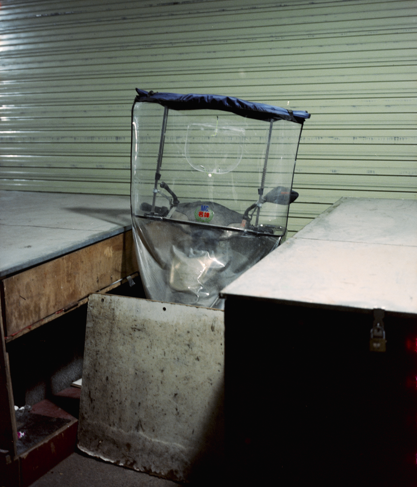
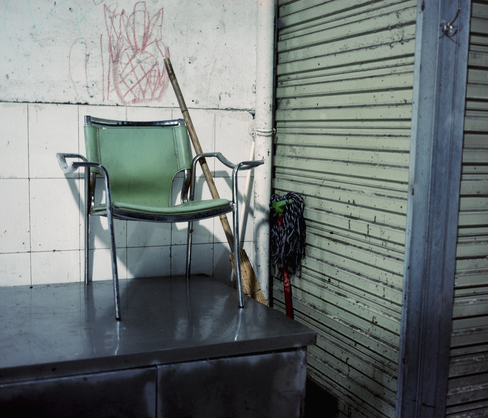
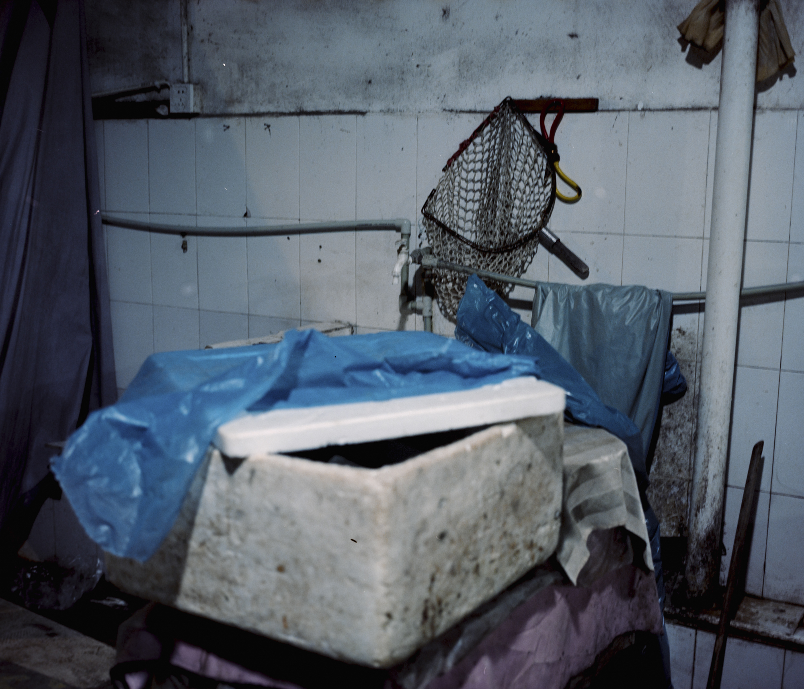
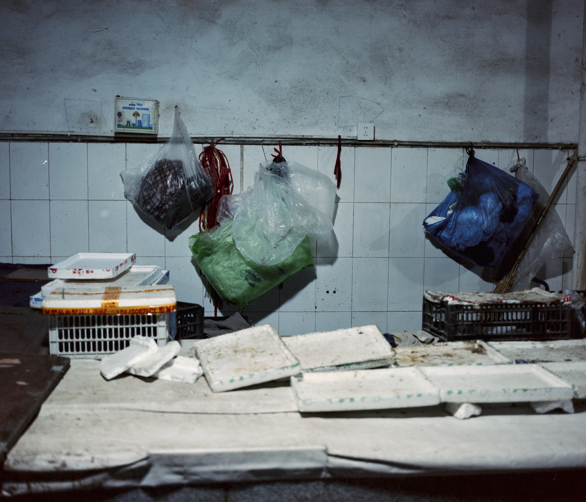
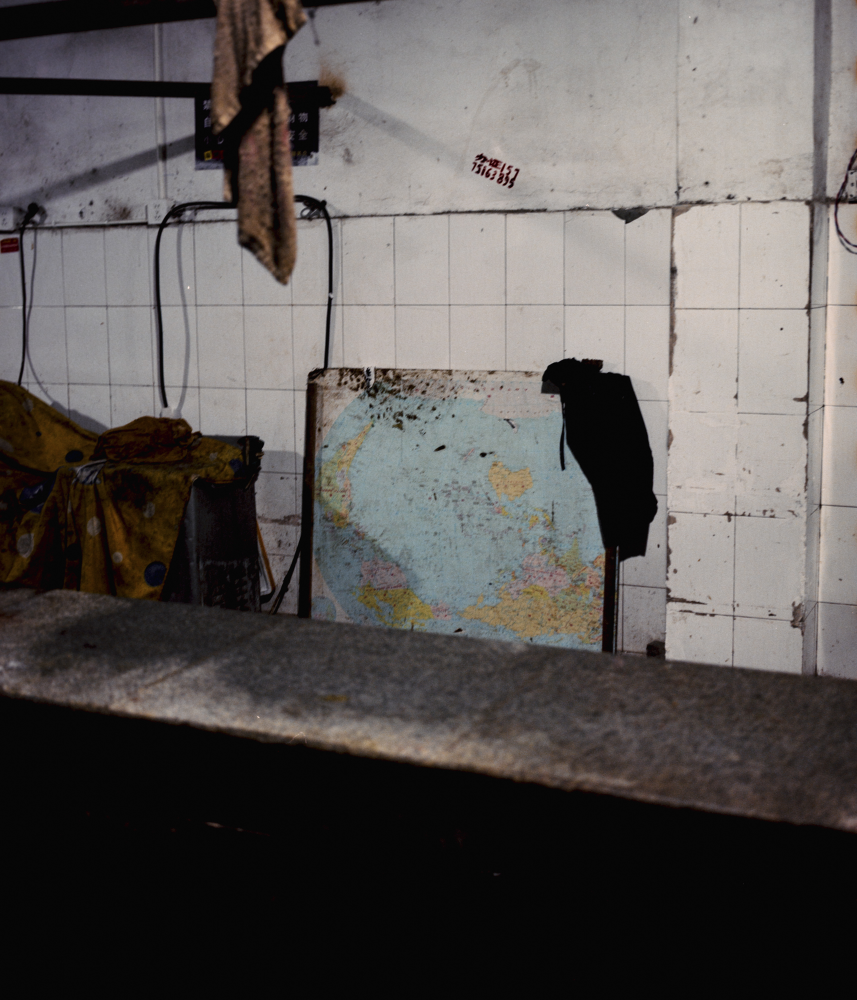
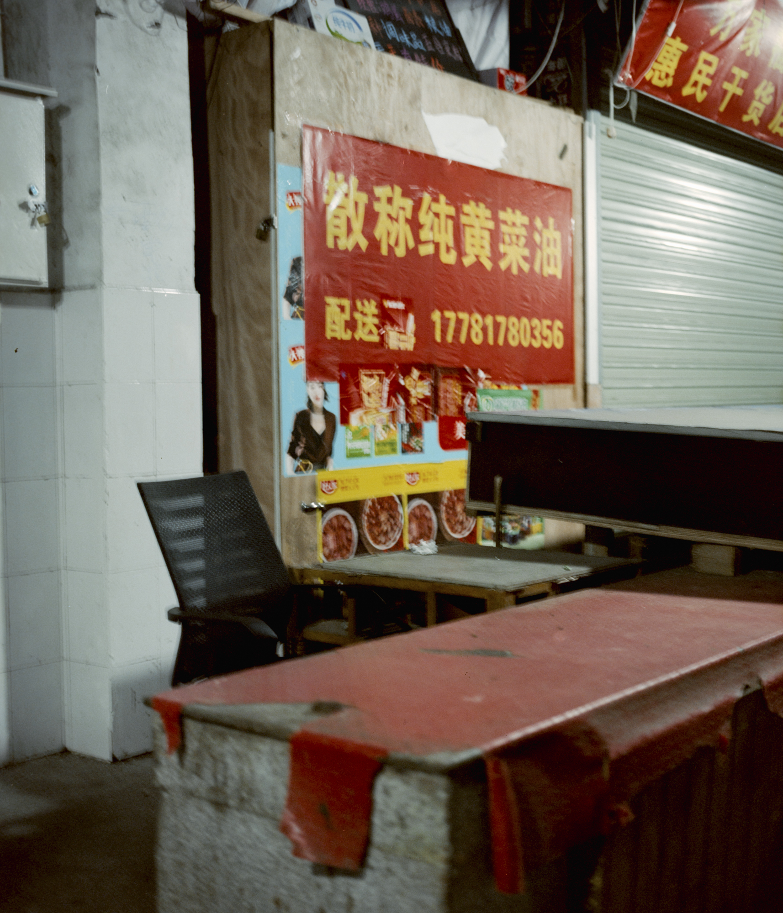
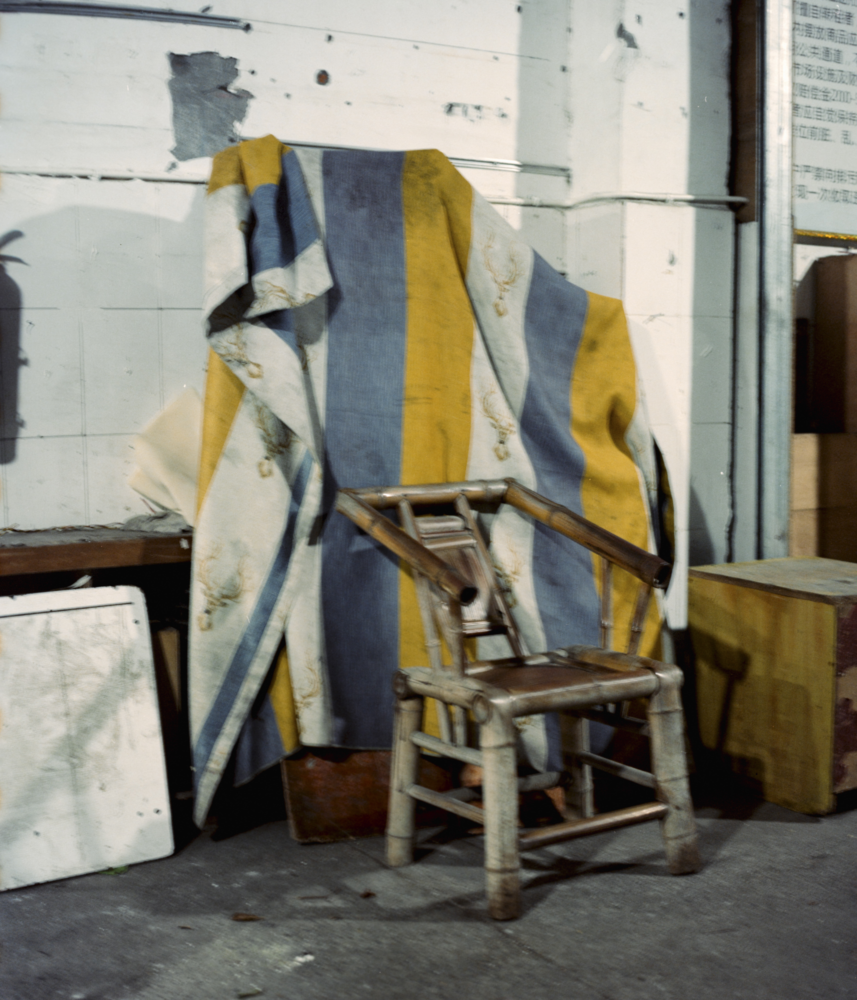
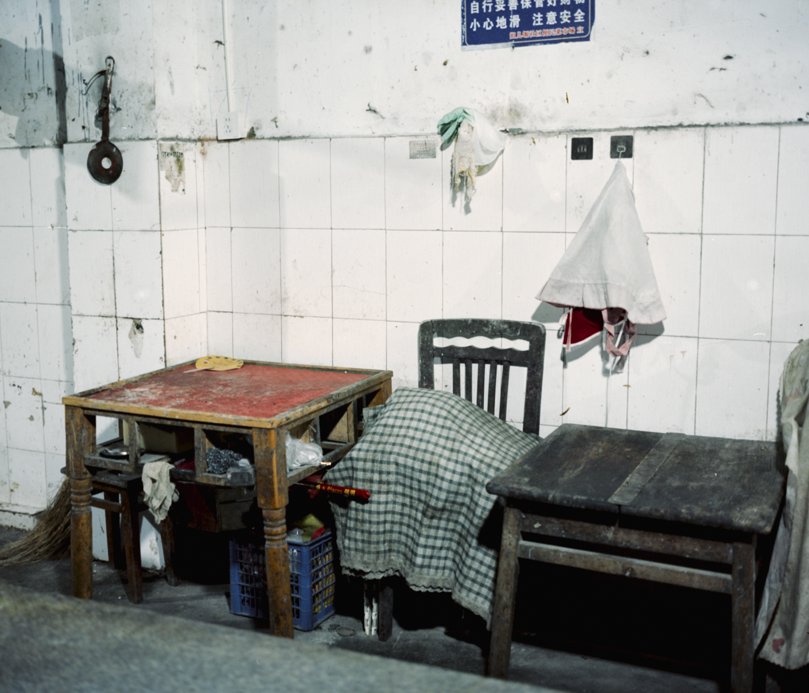
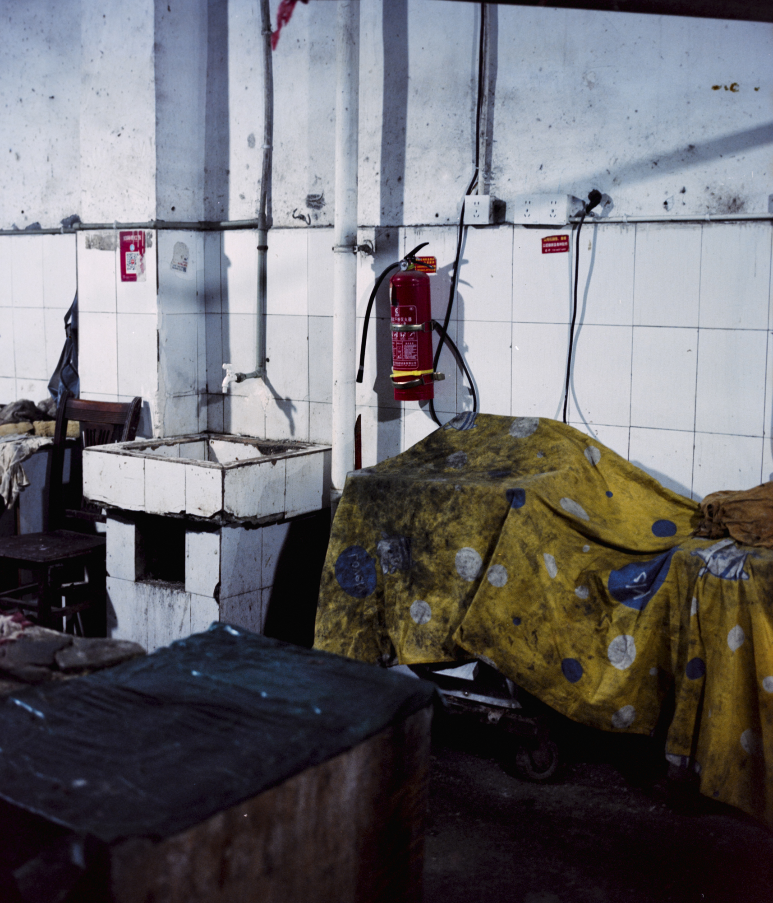
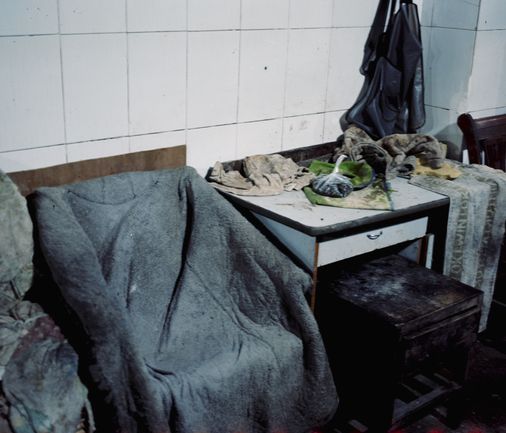


舒运东是一位来自成都的摄影与视觉艺术创作者。他的创作关注日常生活中被忽略的空间、物件与情绪状态，并通过摄影、数字图像和空间叙事，探索现实、记忆与身份之间的不稳定关系。
他的作品常在熟悉与陌生、真实与失真、归属与疏离之间展开。无论是私人房间中的停滞感、数字扫描中的现实崩塌，还是深夜菜市场中热闹过后的沉寂，舒运东都试图通过被忽视的日常现场，回应当代年轻人的孤独感、身份漂移与对地方记忆的重新寻找。
电话：+86 18010697255 (微信号同电话)
邮箱：2433549925@qq.com
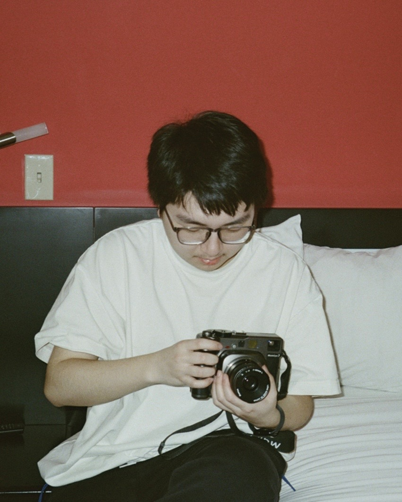